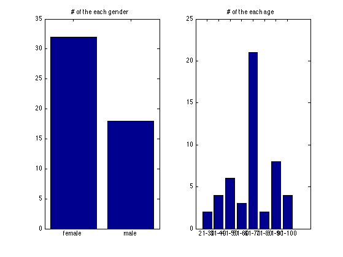

Knowing information of the face dataset
The Face Analysis Toolbox provides several functions to read dataset and plot dataset information
The following demonstrates how to read dataset, and then use "faceInfoPlot" to plot the information:
dataSet = '../demoDataset/PAL'; faceInfoList = faceDatasetRead(dataSet, 'bmp'); faceInfoPlot(faceInfoList);
Start to create answer list.... Choose PAL dataset. progress==>1 / 50 progress==>2 / 50 progress==>3 / 50 progress==>4 / 50 progress==>5 / 50 progress==>6 / 50 progress==>7 / 50 progress==>8 / 50 progress==>9 / 50 progress==>10 / 50 progress==>11 / 50 progress==>12 / 50 progress==>13 / 50 progress==>14 / 50 progress==>15 / 50 progress==>16 / 50 progress==>17 / 50 progress==>18 / 50 progress==>19 / 50 progress==>20 / 50 progress==>21 / 50 progress==>22 / 50 progress==>23 / 50 progress==>24 / 50 progress==>25 / 50 progress==>26 / 50 progress==>27 / 50 progress==>28 / 50 progress==>29 / 50 progress==>30 / 50 progress==>31 / 50 progress==>32 / 50 progress==>33 / 50 progress==>34 / 50 progress==>35 / 50 progress==>36 / 50 progress==>37 / 50 progress==>38 / 50 progress==>39 / 50 progress==>40 / 50 progress==>41 / 50 progress==>42 / 50 progress==>43 / 50 progress==>44 / 50 progress==>45 / 50 progress==>46 / 50 progress==>47 / 50 progress==>48 / 50 progress==>49 / 50 progress==>50 / 50 Done. Start to get all face Info. ... progress==>1 / 50 progress==>2 / 50 progress==>3 / 50 progress==>4 / 50 progress==>5 / 50 progress==>6 / 50 progress==>7 / 50 progress==>8 / 50 progress==>9 / 50 progress==>10 / 50 progress==>11 / 50 progress==>12 / 50 progress==>13 / 50 progress==>14 / 50 progress==>15 / 50 progress==>16 / 50 progress==>17 / 50 progress==>18 / 50 progress==>19 / 50 progress==>20 / 50 progress==>21 / 50 progress==>22 / 50 progress==>23 / 50 progress==>24 / 50 progress==>25 / 50 progress==>26 / 50 progress==>27 / 50 progress==>28 / 50 progress==>29 / 50 progress==>30 / 50 progress==>31 / 50 progress==>32 / 50 progress==>33 / 50 progress==>34 / 50 progress==>35 / 50 progress==>36 / 50 progress==>37 / 50 progress==>38 / 50 progress==>39 / 50 progress==>40 / 50 progress==>41 / 50 progress==>42 / 50 progress==>43 / 50 progress==>44 / 50 progress==>45 / 50 progress==>46 / 50 progress==>47 / 50 progress==>48 / 50 progress==>49 / 50 progress==>50 / 50 Done.
Copyright 2012-2013 Jyh-Shing Roger Jang.